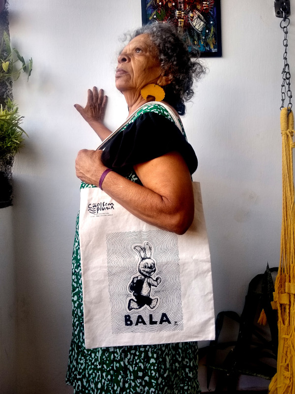

Sobre a Cão Sem Pluma
A Cão Sem Pluma foi criada durante a pandemia de 2020 com o objetivo de aumentar as fontes de rendas dos criadores e colaboradores. Todas as estampas eram desenhos autorais dos nossos parceiros, a produção das peças realizada manualmente e nossos fornecedores locais. Nossos esforçoes sempre visaram o fortalecimento do mercado local.
Confira no vídeo abaixo como era realizada nossa produção.